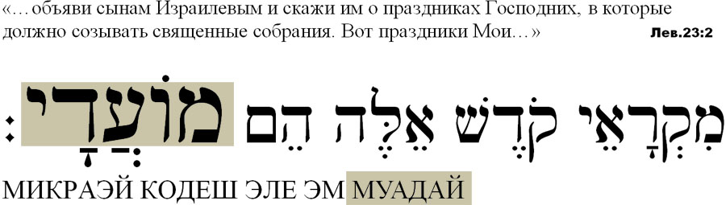
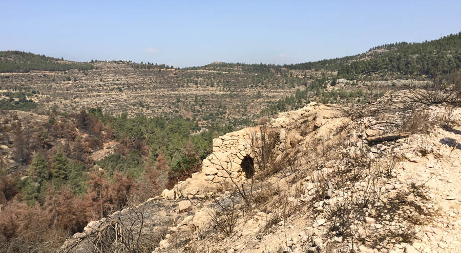
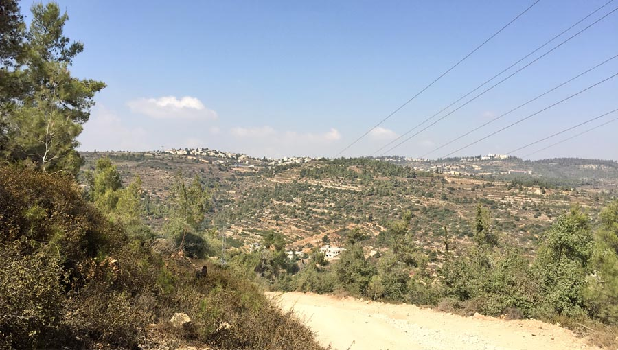
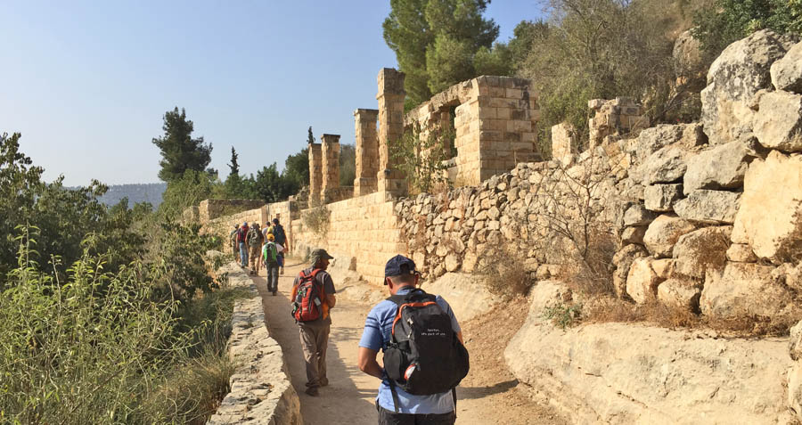

Еврейское отношение к Праздникам Господним
Весь еврейский календарь и отношение Всевышнего к нему устроены так, что верующий еврей живет от Праздника к Празднику. Я это сравниваю со свиданиями влюбленных / отношение Бога и Его народа в Писании часто сравнивается с отношениями возлюбленных /. Эти влюбленные все еще не могут пока быть всегда вместе, но Жених обещает Своей возлюбленной, что будет ждать ее в определенное время, в определенном месте (на иврите это называется МУАДИМ. Когда Господь говорит вот Праздники Мои, Он говорит "ЭЛЕ МУАДАЙ")

Фото Кости Крицкого. Иудейские горы



Это видео - короткая зарисовка на стоянке из нашего праздничного пешего восхождения в Иерусалим.
Здесь можно посмотреть мои фото впечатления из этого восхождения.